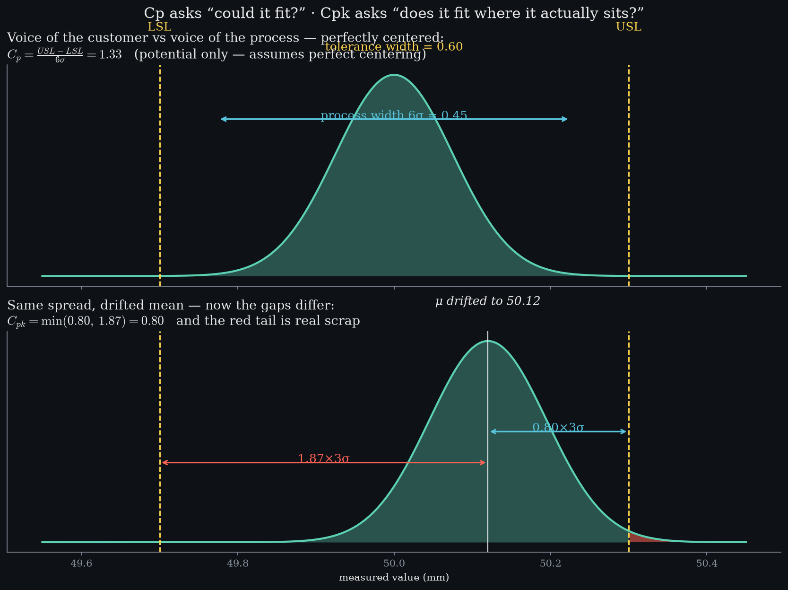

Control limits describe what a process does; spec limits describe what a customer will accept. Capability indices measure the gap between those two sentences — Cp compares widths, Cpk also accounts for where the mean sits. And because the process is approximately normal, every Cpk value converts to a concrete promise.
Cpk = min(USL − μ, μ − LSL) / 3σ
(3.1)
The nearer gap decides. Cp is pure geometry; Cpk is honest about where the mean actually sits.
Interactive — what does your Cpk promise?
SYSTEM-OK
- Predicted defects
- —
- Odds of a bad part
- —
- Industry verdict
- —
Computed from the exact normal tail — the same integral tested in spc-lab's suite. No lookup tables.
